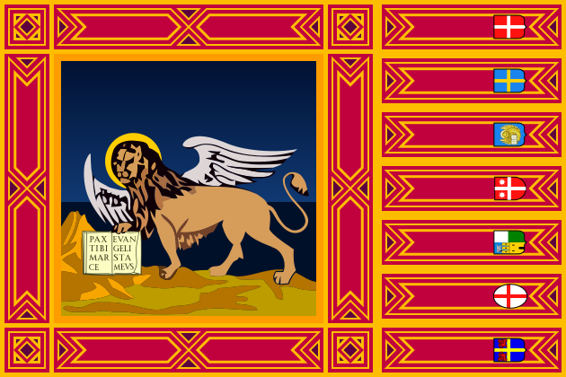

Stromenti de gramàtega vèneta
Deskarga (na version stravèca de) la
Gramàtega de lengua vèneta pa’ i vèneti [20120624]
Koniugador de i vèrbi
–
Silabador
–
Intivador de le varianti
–
Galepin
–
Konvertidor de mexure
Nàsita de ‘l alfabeto vèneto
–
Koretori ortogràfegi de la lengua vèneta
novo!